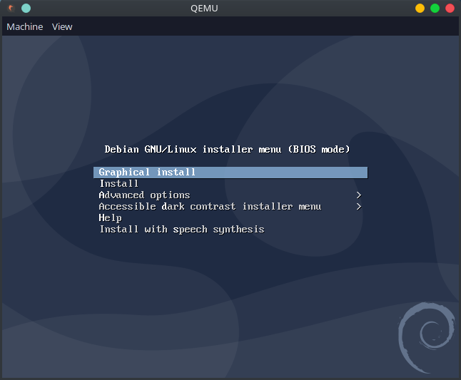
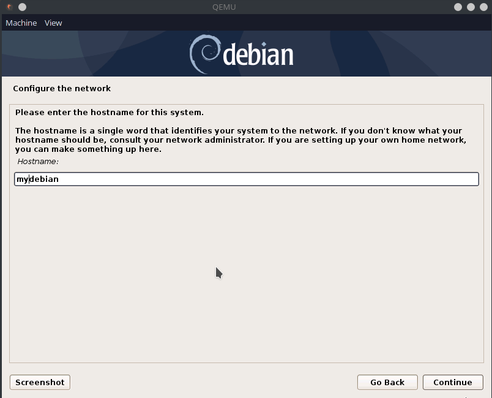
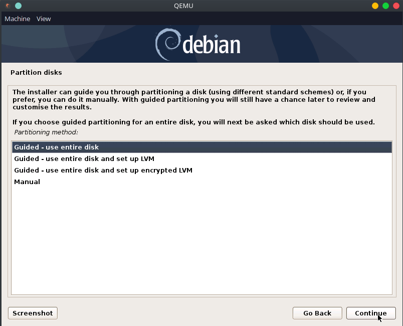
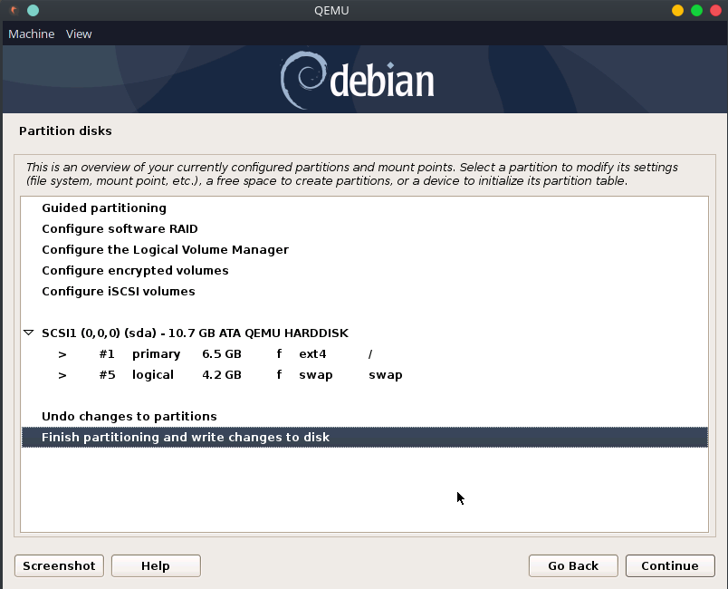
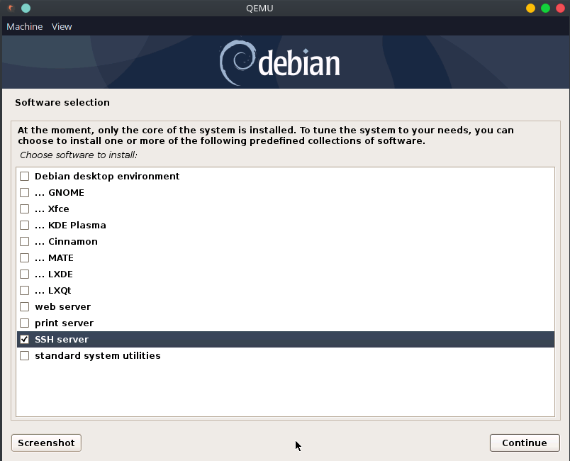
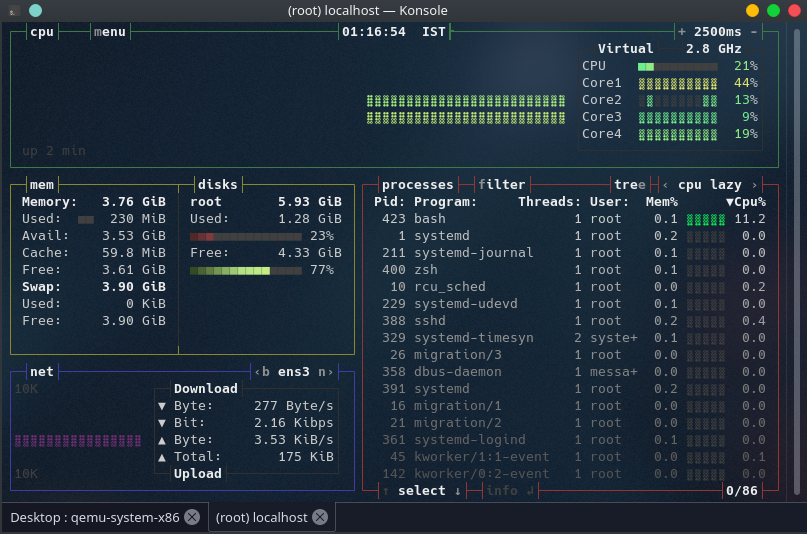

Backstory
While there can be many reasons as to why you would need a virtual machine, maintaing clean environment and dependency is one of them. I have triple boot laptop, with windows, ubuntu and arch. I do ctf mostly while using arch. Some might say this is an overkill, I wanted to experiment with arch as I had heard a lot about it and I have been using a dual boot system with ubuntu and windows for quiet a while, and I had gotten bored of ubuntu. A few months back, I also tried fedora. It’s a great alternative to ubuntu too but I was having some driver issues and I had to revert back to ubuntu. Then a few days after that, I tried the plasma and cinnamon desktop with ubuntu, while those were great, my disks filled up. And now I am using ubuntu with the default gnome and arch with kde plasma. I decided to share writeups for the ctf challenges I do, to share my knowledge and experience as well as a reference for myself in future. I had some trouble setting up the environment for jekyll on arch, so I decided to spin a minimal debian vm for it using qemu. While I could have also used docker or vagrant, I still went with qemu based vm. Debian because it’s much more stable.
Install QEMU and download ISO for debian net installer
This tutorial assumes you have qemu already installed and you are comfortable with the shell. Qemu is a generic and open source machine emulator and virtualiser. Also, I used a debian net installer for this. After you have qemu installed and then net installer downloaded, we are ready to create our VM.
Create a virtual harddisk
1
qemu-img create -f qcow2 debian.qcow 10G
This command will create a virtual harddisk named debian.qcow with a size of 10GB in the current folder. The 10GB size is dynamically allocated.
Now we are ready to spin up our vm. Make sure the net installer iso is in the current directory or change the path to point to it.
Spin up the VM and install Debian
1
qemu-system-x86_64 -hda debian.qcow -cdrom debian-10.6.0-amd64-netinst.iso -boot d -m 4000 -smp 4
This command will start the virtual machine with our created debian.qcow as the harddisk, the net installer iso as the cdrom and boot from it. Also, the machine will use 4 smp cores or threads and 4000 mega bytes of memory. After you run this command, a qemu window will open, with the boot options.

Continue with the graphical install and then you would be asked you language, area, keyboard layout preference etc. Select the appropirate one and keep clicking next. 
Then you would be asked your hostname, which would basically be the name of your pc. Choose a name and continue. After this will come the domain name input and you can leave it blank and after that choose the root password and then create a user. The root user and your created user would be different. 
When asked for choosing the disk, select the guided, use entire disk option and click next a few times. 
Commit the changed to the disk. 
After that it will take a while installing everything and then you would be given the option to install additional software. I intend to use the vm only over ssh, so I am not going to install a Desktop Manager. For Now, I will just select an SSH server and continue. You can always install more softwares later. The install would finish after a while and prompt you to restart. Press Ctrl+C in the window where you started qemu from and the enter these command to restart.
1
qemu-system-x86_64 -hda debian.qcow -m 4000 -smp 4
We removed the cdrom as it is no longer needed and this time we will directly boot from the virtual hdd. Login as the root user and do an apt update. You are already running as the root so you don’t need the ‘sudo’. Infact you will have to install sudo using apt install sudo if you intend to use sudo. The first thing I did after installing the vm was installing zsh and setting up oh-my-zsh. zsh is a shell just like bash (the default shell) but with much better auto completion features. I also install vim. Also you would need to enable ssh as root in /etc/ssh/sshd_config if you wish to ssh as root. Now issue a shutdown now command to shutdown the machine and now we can start it with
1
qemu-system-x86_64 -hda debian.qcow -m 4000 -smp 4 -netdev user,id=unet,hostfwd=tcp:127.0.0.1:2222-:22 -device -nographic -enable-kvm
This command will start the vm with port forwarding set and also without graphics, so you wouldn’t a qemu window open, also I enable kvm acceleration.
Now, you can ssh into your vm from another machine using
1
ssh -p2222 root@localhost
PS: this will only work if you enabled ssh from root. 
So, this is a screenshot of the system load. So, out VM is using just 230MB of RAM and 1.23GB of disk space. Our minimal Debian install is ready. This is bashtop if you are wondering.